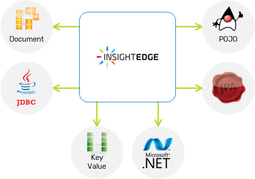

Other Data Access APIs
promotes openness and interoperability, supporting common interfaces for accessing data, such as JPA, Document, SQL, JDBC, Memcached, Spring Data and a native POJO-based API. You can choose the best API for the case at hand, and be able to operate on the same data regardless of the APIs you have chosen. Look at the different API pages to learn about each and every use case for data accessing on .
